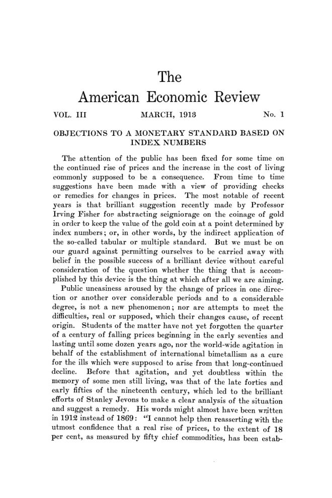

Kinley, 1913: por que um dólar estável não cura a carestia
Leitura: 9 min
Contra o dólar corrigido por números-índice de Irving Fisher, David Kinley argumenta que a média de preços mistura o que vem da moeda com o que vem dos bens, e que a carestia pede outros remédios.


Em 1869, Stanley Jevons escreveu que uma alta real de 18% nos preços, medida por cinquenta mercadorias principais, estava estabelecida desde 1849, e que era difícil não atribuí-la às descobertas de ouro. David Kinley, da University of Illinois, cita a passagem logo na abertura do número de março de 1913 da American Economic Review e observa que ela poderia ter sido escrita em 1912. A carestia voltara ao centro do debate público, e com ela os projetos para corrigi-la.
O projeto mais notável era o de Irving Fisher, de Yale. Kinley o chama de brilhante e dedica o artigo a mostrar por que não o aceita. A advertência inicial dá o tom: é preciso cuidado para não se deixar levar pela engenhosidade de um mecanismo sem perguntar se aquilo que ele produz é de fato o que se busca.
O que Fisher propunha e de onde vinha a ideia?
Kinley organiza as tentativas históricas de corrigir os preços em grupos. Há a fixação direta de preços pelas autoridades, que reaparecia nos pedidos de regular os trustes pelo preço de seus produtos; Kinley vê justificativa para isso nos serviços públicos, não nos bens produzidos em concorrência. Há a busca de um padrão de valor invariável, mais presente nos livros que nas leis. Há os planos de mudar a quantidade de moeda sem medir quanto, como o bimetalismo, pensado para tempos de queda de preços. E há o padrão tabular, que mede a mudança da média dos preços e corrige os pagamentos na mesma proporção.
Fisher acrescentava uma quinta via: controlar a oferta de moeda por uma senhoriagem, a taxa cobrada na cunhagem do ouro, que subiria ou desceria conforme o índice de preços. Para Kinley, é uma aplicação indireta do padrão tabular, e quaisquer defeitos deste estão embutidos no plano. O artigo, diz ele, é essencialmente uma crítica desse método.
O contexto distributivo também mudara. Na longa queda de preços iniciada no começo dos anos 1870, a agitação vinha de produtores e devedores, e alimentou o bimetalismo internacional e a remonetização da prata. Na alta em curso, quem preocupava reformadores e filantropos era o assalariado e o detentor de renda fixa, cujo dinheiro comprava cada vez menos. Os prejuízos de um período, nota Kinley, não são compensados pelos ganhos do outro: as classes são as mesmas, mas não os indivíduos.
Por que a média de preços engana?
O núcleo do argumento é a distinção entre as causas da variação. Os preços podem mudar porque mudou a oferta de moeda ou porque mudou a oferta de bens. Um padrão de valor justo corrigiria só as primeiras, para medir as segundas. Mas nenhum plano baseado em média de preços separa uma coisa da outra. Comparar o crescimento da produção de bens com o do ouro não resolve, porque a elasticidade da procura difere de um bem para outro: uma pequena mudança na oferta de um bem pode provocar grande mudança no preço, o que não vale para o ouro.
Kinley usa a equação de trocas para mostrar o limite do argumento oposto. Em teoria, a igualdade entre os dois lados pode ser restaurada mexendo em qualquer um dos termos, inclusive só na quantidade de moeda, como se mantém o nível de um líquido em tubos comunicantes alterando o volume em um só deles. A analogia hidráulica falha porque, na economia, a correção provoca reações em todos os fatores, algumas no sentido contrário ao desejado.
“Não há ali nenhum elemento psicológico.” (“There is no psychological element there.”)
E não é indiferente, para a sociedade, qual termo se move. Se o equilíbrio volta porque aumentou a quantidade de bens, a prosperidade geral cresce, e os bens mais abundantes acabam ao alcance das classes mais pobres, porque a procura dos mais ricos por eles se satura. Com a moeda não é assim: a procura dos ricos por dinheiro é tão grande quanto antes.
Uma moeda manejada põe mais carne na mesa?
Kinley desce ao concreto. Quando se reclama da carestia, pensa-se no preço da carne e, talvez, no do trigo. Descontada a manipulação de preços pelos monopólios, havia anos de escassez crescente de carne bovina. Em Illinois, por exemplo, os fazendeiros trocavam havia uma década ou mais a pecuária pela lavoura, e o mesmo ocorria em outros estados que antes tinham excedentes para vender. As safras também haviam tido anos de quebra, cujos efeitos se espalham por vários anos.
“Nenhuma restauração do nível de preços aumentará a oferta de carne.” (“No restoration of the price level will increase the supply of beef.”)
Há ainda a distribuição da moeda nova. Ela teria de chegar às classes e aos indivíduos de modo a preservar as posições relativas, e depois ser gasta pelos indivíduos sem desarrumar seus orçamentos. A primeira condição não se cumpre: a moeda se espalha, como mostrara Cairnes, aos solavancos, e beneficia primeiro quem a recebe primeiro. O problema da carestia, escreve Kinley, é fazer chegar proporcionalmente mais a quem tem menos. Parte da alta do custo de vida, acrescenta, vinha de padrões de vida mais altos; o crescimento de diversões como o cinema mostrava que a classe média ainda encontrava como gastar com elas.
Os efeitos sobre a produção e os salários completam a crítica. O produtor capaz de baixar custos não teria interesse em fazê-lo se o ganho fosse logo anulado por uma mudança na média de preços. Uma nova média também não se distribui por igual entre os preços relativos: o produtor cuja principal matéria-prima subiu não se consola com uma alta geral decretada porque a maioria dos artigos caiu. Para o assalariado, a correção periódica tiraria força da luta por salários maiores, que só se ganha com tempo.
O crédito acompanha o ouro?
Kinley contesta a afirmação de Fisher de que o volume de crédito tem relação constante com a quantidade de moeda. Admite que há um volume usual de crédito sobre uma dada base monetária e um limite máximo de expansão, no qual a relação de fato se fixa. Abaixo desse limite, porém, cabem todas as variações. Em fases de expansão rápida, o crédito é empurrado até o teto; depois, a oferta de moeda é estimulada e, por um tempo, as trocas com moeda crescem mais depressa que as feitas a crédito. Haveria, assim, uma espécie de periodicidade no uso relativo de cada um.
A frase de que o crédito, em última análise, repousa no ouro precisa de interpretação. Kinley a lê assim: mantém-se uma reserva de ouro para liquidar o saldo depois de uma longa série de compensações, e o tamanho desse saldo depende da confiança. Daí a conclusão de que o volume de crédito possível sobre uma mesma quantidade de moeda é elástico, e de que uma manipulação da moeda poderia ser anulada por mudanças no crédito. Sobre o plano em si, acrescenta que é a moeda posta em circulação, e não a senhoriagem retida, que afeta os preços, e que o máximo que se pode dizer dele é que retardaria a entrada de uma oferta maior de ouro.
O que Kinley põe no lugar?
O autor não defende a inação. Elogia a contribuição de Fisher à teoria monetária e a engenhosidade do plano, que considera praticável em certas condições e capaz de algum bem dentro de limites, mas não o aceita como remédio adequado ou científico. A investigação estatística, diz, talvez um dia encontre um; o momento ainda não chegou. Enquanto isso, propõe agir em outras frentes: o movimento de conservação dos recursos, para aumentar a produção e baixar custos; a regulação das combinações; a redução do custo de distribuição; um padrão de vida americano garantido por salários mínimos fixados por comissões; a ação dos sindicatos e das juntas de arbitragem, mais contínua e rápida que qualquer correção monetária periódica; e reservas bancárias maiores, com regulação do crédito.
O fecho é uma objeção de método a todos os planos discutidos. Eles curam males já sofridos; quando o remédio chega, as forças econômicas já se ajustaram, e corrigir agora é desfazer o ajuste. Ou então a correção é prevista e descontada, e faz mais mal que bem. O que falta, conclui Kinley, é um esquema de ação antecipatória.
Na minha leitura
Na minha leitura, o artigo vale menos pela recusa do plano de Fisher do que pela distinção que o sustenta: a variação de preços que vem da moeda não é a mesma coisa que a que vem da escassez de bens, e um instrumento que reage à média não sabe distinguir uma da outra. É o problema que os bancos centrais conhecem como choque de oferta. Kinley o formula com a carne de Illinois e conclui que nenhuma política monetária repõe o gado que falta.
A crítica sobre o crédito é igualmente atual. Se o crédito pode se expandir e se contrair sobre a mesma base de ouro, controlar a quantidade de moeda não garante controlar os meios de pagamento, e a regra perde a força. A preferência final de Kinley, por reservas, regulação do crédito e ação antecipatória, desloca a discussão da regra automática para a gestão do sistema bancário, que é onde ela acabaria ficando.
Glossário
- Padrão tabular
- pagamento de dívidas em quantia corrigida por um índice de preços, para preservar o poder de compra.
- Senhoriagem
- parcela retida pelo governo na cunhagem; no plano de Fisher, variaria conforme o índice de preços.
- Bimetalismo
- sistema em que ouro e prata servem ambos de padrão monetário, a uma razão fixa entre eles.
- Equação de trocas
- identidade de Fisher: moeda vezes velocidade, mais depósitos vezes velocidade, igual a preços vezes volume de comércio.
- Elasticidade da procura
- sensibilidade da quantidade procurada de um bem às variações do seu preço.
- Choque de oferta
- variação de preços causada pela produção, como uma quebra de safra, e não pela moeda.
Fontes
- Objections to a Monetary Standard Based on Index Numbers — David Kinley (University of Illinois) (pp. 1–19). JSTOR · Internet Archive (PDF)
- Edição completa, com os demais artigos: Nº 122 do Arquivo.
Documento em domínio público (EUA, publicado antes de 1931), via JSTOR Early Journal Content e Internet Archive. Resumo e comentário do autor deste site, sem afiliação com a American Economic Association. Encontrou um erro? Escreva: a correção é publicada no próprio texto, com data.
↑ Nº 122 · Março de 1913: números-índice, um tribunal e a previsão dos negócios Brookmire, 1913: por que nenhum gráfico prevê sozinho os negócios →